Подготовка
Все шаги перечисленные ниже производятся в панели управления Amazon Web Services.
Создание бакета
Заходим в консоль Амазона, переходим в настройки S3.
Чтобы создать бакет нажимаем на Create Bucket:
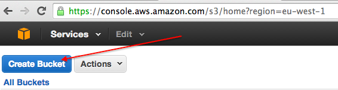
В открывшемся окне вводим название бакета и выбираем регион Ireland (он ближе всего к нашим серверам).
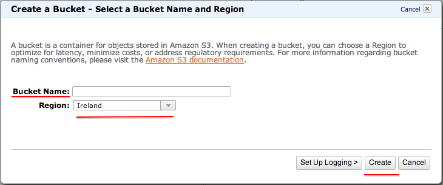
Имя бакета должно быть уникальным, в соответствии с ним создается поддомен вида bucketname.s3.amazonaws.com, по которому будут доступны наши файлы. Жмем Create.
Если имя бакета не уникально, то будет выведена ошибка.
После создания новый бакет появится в списке слева.
Открытие публичного доступа на чтение
Чтобы файлы, находящиеся в бакете были публично доступны по прямой ссылке необходимо добавить глобальное разрешение в меню Properties выбранного бакета.
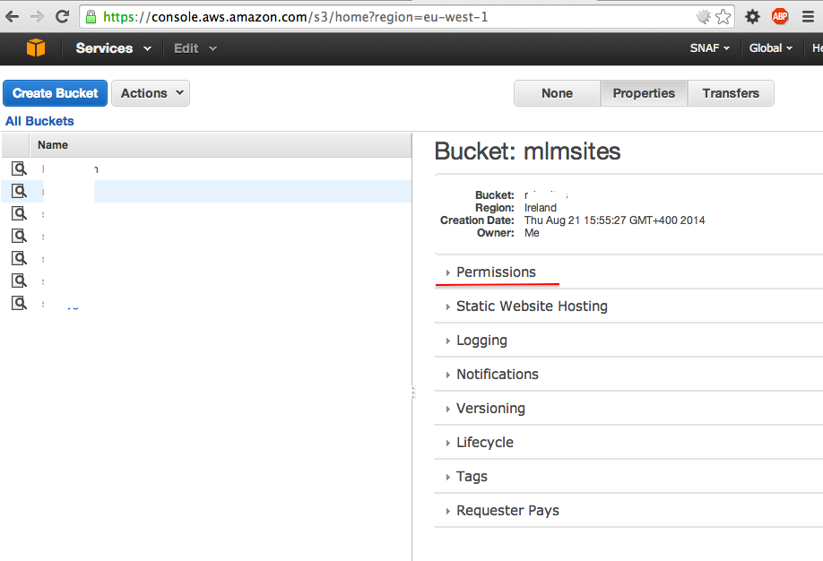
По умолчанию авторизованному супер-пользователю доступны все действия с бакетом и объектами в нем.
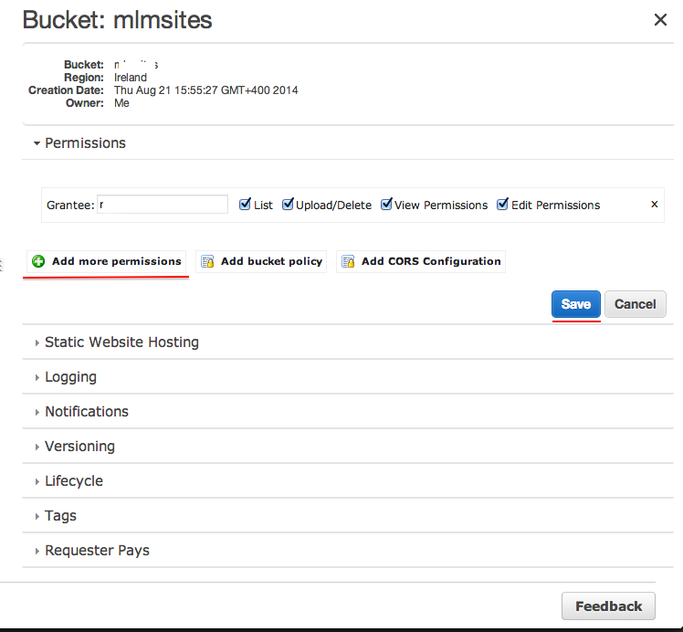
Чтобы добавить разрешение на чтение файлов для анонимных пользователей выбираем Add more permissions, в поле Grantee выставляем Everyone и ставим флаг View Permissions. Сохраняем изменения.
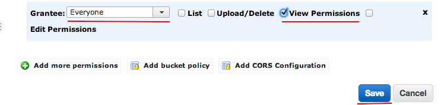
Настройка доступа
Для того чтобы работать с API Amazon Web Services необходимо создать группу, выставить групповые права, создать пользователя и добавить его в группу.
Для управления пользователями в Amazon используется сервис Identity and Access Management (IAM).
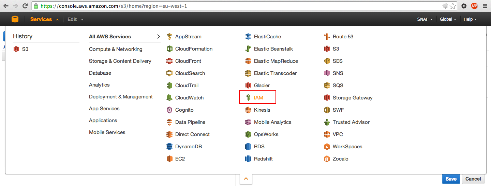
Создание группы
Создаем группу перейдя в панель управления группами IAM и нажав Create New Group.
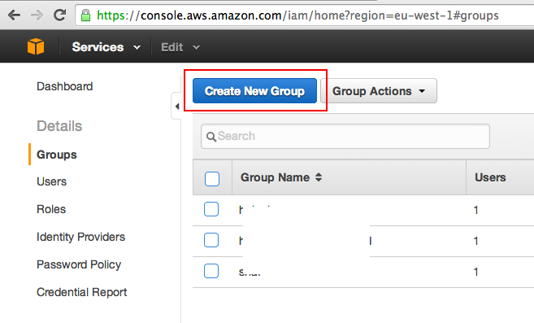
Вводим имя группы.
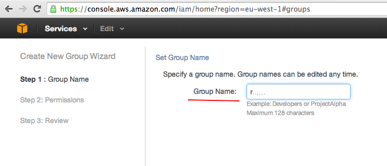
Далее необходимо указать, какие действия и над какими объектами разрешены пользователям группы.
Нам потребуются разрешения на получение списка файлов, чтение, загрузку, удаление и изменение прав файлов.
Этим требованиям соответствуют права:
- ListBucket
- GetObject
- PutObject
- DeleteObject
- GetObjectAcl
- PutObjectAcl
Чтобы сгенерировать файл с правами, выбираем пункт Policy Generator.
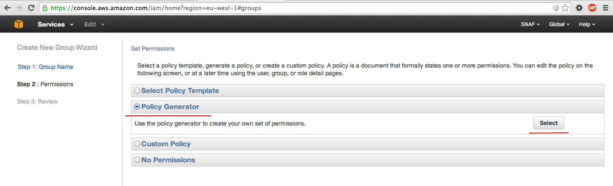
Указываем сервис Amazon S3 и выбираем указанные выше действия в списке Actions.
В поле Amazon Resource Name (ARN) нужно указать путь до ресурса, в нашем случае это бакет S3.
Название ресурса указывается в формате arn:aws:SERVICE_NAME:::RESOURCE_NAME,
соответсвенно SERVICE_NAME - s3, а RESOURCE_NAME - название бакета, выбранное при создании.
Допустим бакет называется mybucket, в таком случае ARN будет arn:aws:s3:::mybucket.
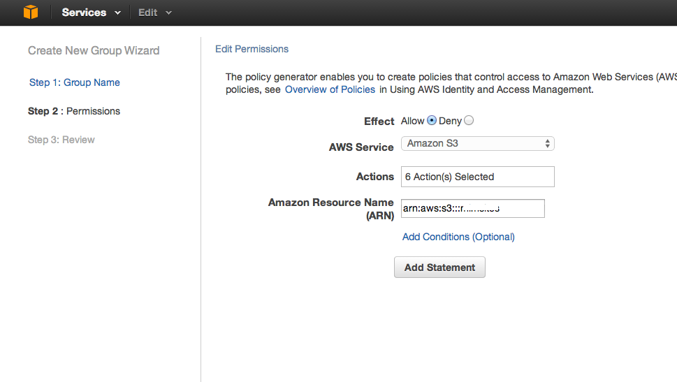
В результате сгенерируется файл с правами, но нам необходимо добавить одну строчку, чтобы все заработало.
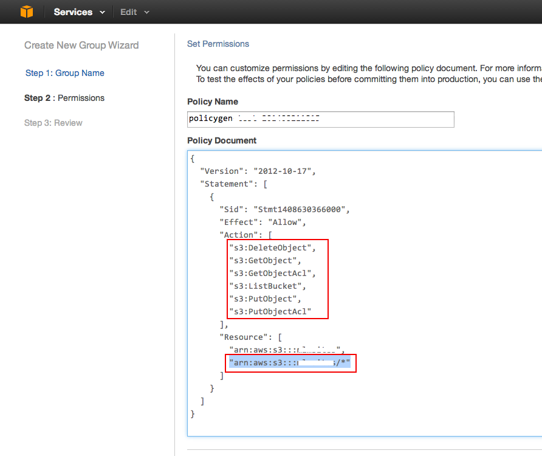
В разделе Resource необходимо продублировать строчку с ресурсом "arn:aws:s3:::RESOURCE_NAME", но добавив в конце /*. Таким образом указанные права будут распространяться не только на сам ресурс (бакет S3 в нашем случае), но так же и на все его содержимое (файлы). В итоге у нас должно быть два ресурса - "arn:aws:s3:::RESOURCE_NAME" и "arn:aws:s3:::RESOURCE_NAME/*", где RESOURCE_NAME - название нашего бакета.
Создание пользователя
Переходим в раздел управления пользователями и нажимаем Create New Users.
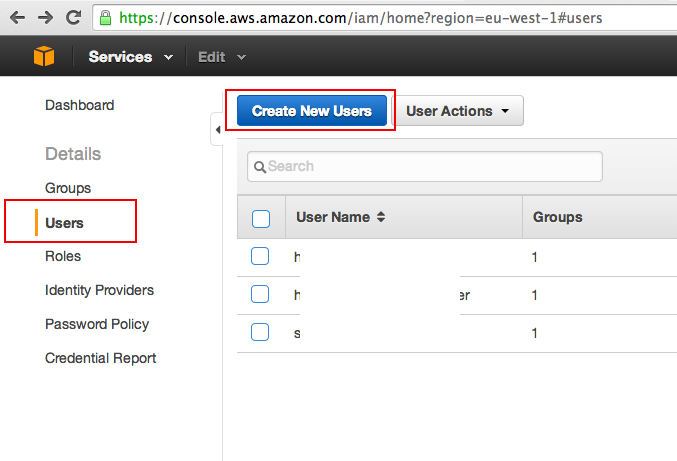
Вводим имя пользователя, убеждаемся что стоит флаг Generate an access key for each user и нажимаем Create.
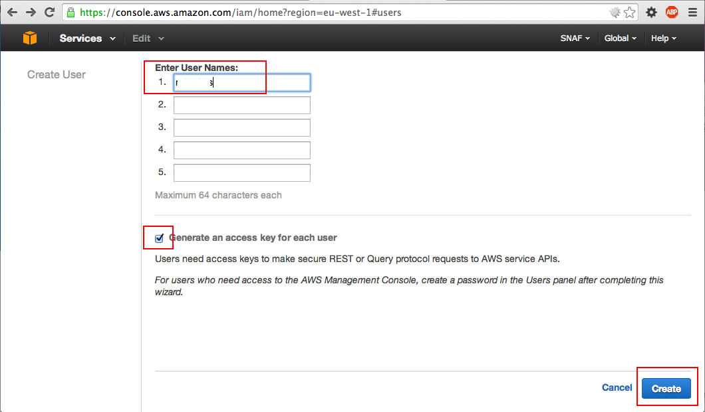
В скрытом поле указаны два ключа - Access Key ID и Secret Access Key. По сути это логин и пароль для работы с API. Сохраняем их в надежном месте.
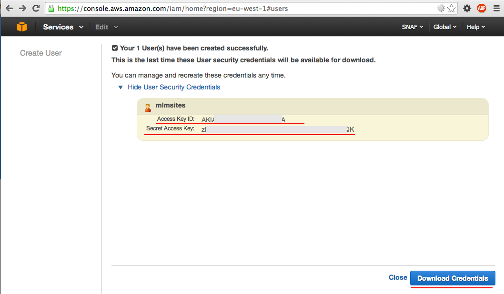
Добавление пользователя в группу
Выбираем созданного пользователя и добавляем его в группу.
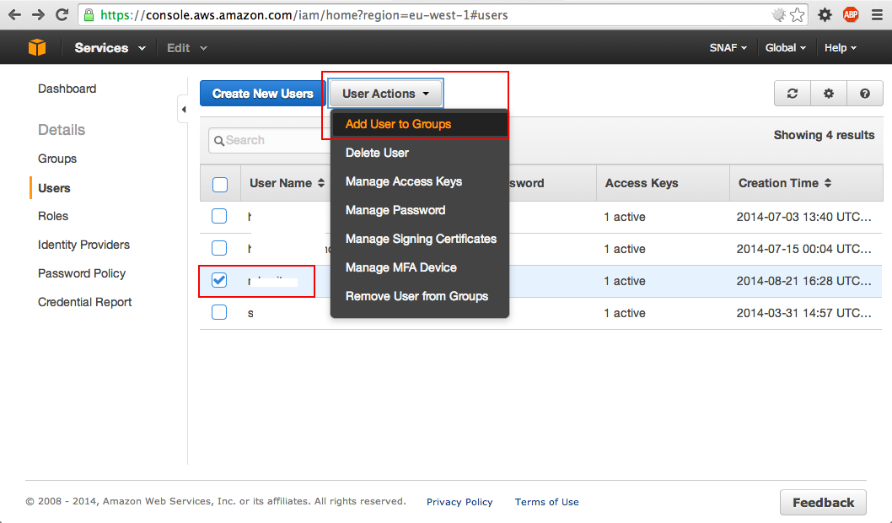
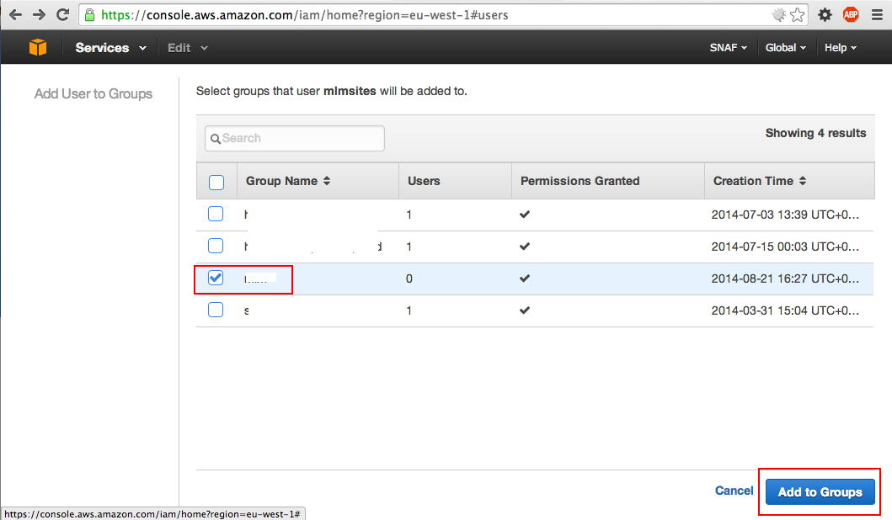
CloudFront
Схема работы
CloudFront - это CDN от Amazon'а. По сути это географически распределенный файловый кеш.
Схема его работы следующая.
Исходный файл существует в единственном экземпляре и хранится в бакете S3, например в Ирландии. В свою очередь у нас настроен CloudFront с серверами в Северной Америке и Европе. В зависимости от того, где находится пользователь запрашивающий файл, он с помощью geo DNS попадает на ближайший к нему сервер CloudFront'а. Сервер сначала ищет файл в своем кеше, и если он находится (cache hit), то сразу отдает его пользователю. В случае, если файла в кеше нет (cache miss), то CloudFront идет к источнику (origin), в нашем случае это бакет S3, скачивает и сохраняет в кеш.
Соответственно вместо ссылки на файл в бакете (http://mybucket.s3.amazonaws.com/boobs.jpg) мы должны давать пользователю ссылку на CloudFront (http://adns8979ascnvhasd3.cloudfront.com/boobs.jpg).
Создание дистрибуции
Переходим в панель управления CloudFront.
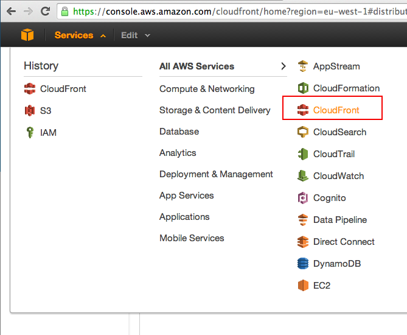
Создаем дистрибуцию.
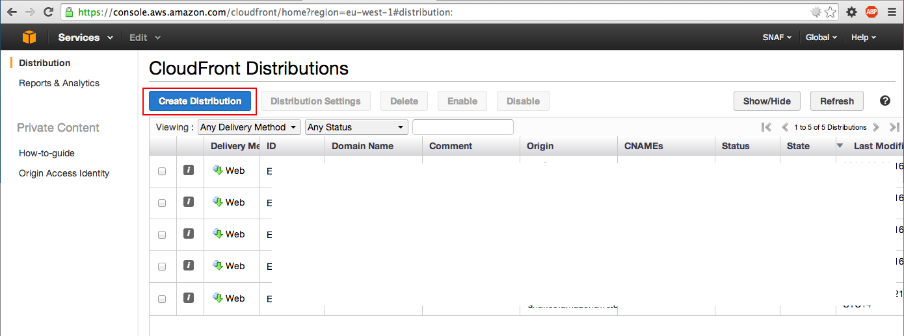
Выбираем тип Web.
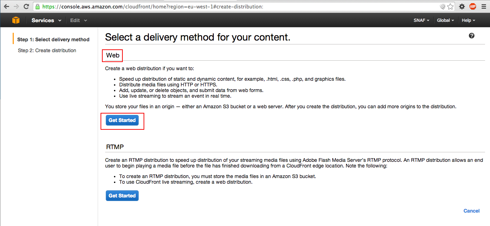
В разделе Origin Settings указывается источник, где лежат исходные файлы.
В выпадающем списке Origin Domain Name выбираем созданный нами бакет вида BUCKET_NAME.s3.amazonaws.com.
Значение в поле Origin ID будет сгенерировано автоматически.
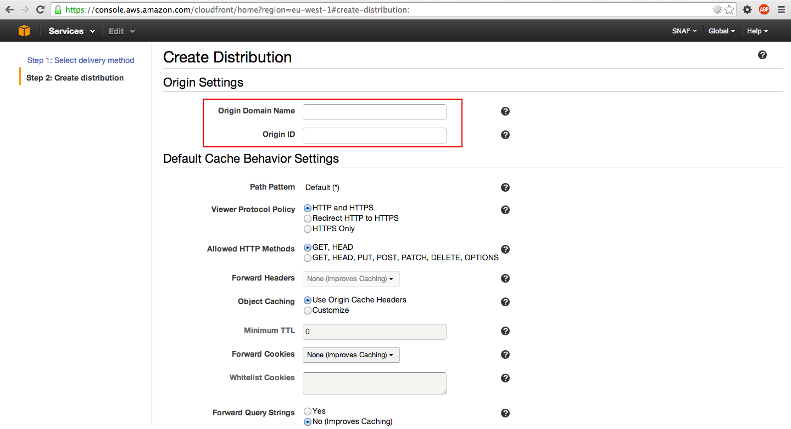
Оставляем все по дефолту кроме поля Price Class в разделе Distribution Settings.
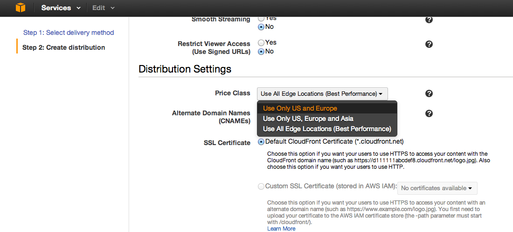
В зависимости от требований можно выбрать в скольких регионах будут находится CDN серверы, соответственно чем больше серверов, тем выше плата за использование. Чтобы сократить стоимость укажем Use Only US and Europe. Если выбрать Use All Edge Locations, то наши файлы будут кешироваться на всех континентах. Полный список регионов указан здесь.
В поле Alternate Domain Names (CNAMEs) можно указать свой красивый домен, который будет использоваться в публичных ссылках на файлы, например cdn.example.com. Об этом чуть позже.
Создаем дистрибуцию нажав Create Distribution.
В списке мы видим, что наша дистрибуция находится в статусе In Progress. Когда статус будет Deployed мы сможем протестировать работу.
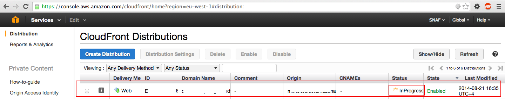
Добавление нашего сервера в дистрибуцию
Дистрибуцию нужно настроить таким образом, чтобы CloudFront в случае, если файла по какой-то причине еще нет на S3, брал его с нашего исходного сервера.
Для этого выберем созданную дистрибуцию и отредактируем настройки нажав Distribution Settings.
Во вкладке General указан созданный для дистрибуции домен вида xxxxxxxx.cloudfront.com (поле Domain Name).
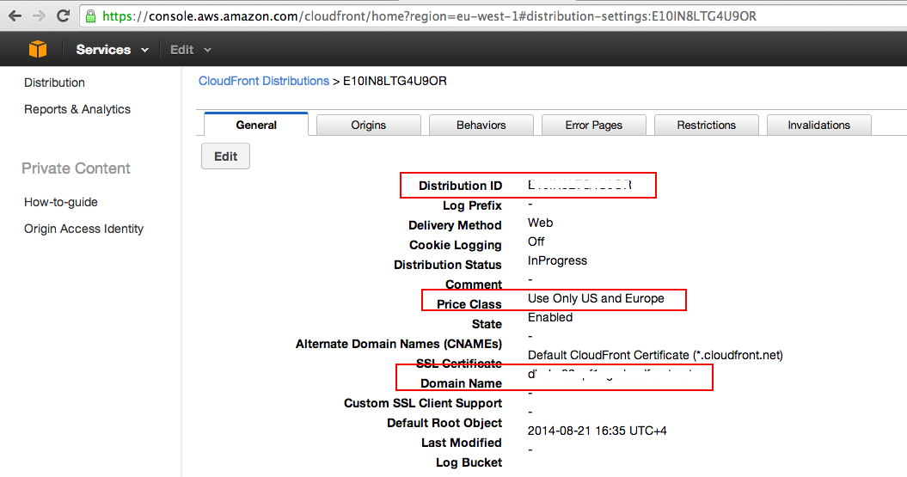
Список исходных серверов настраивается в вкладке Origins.
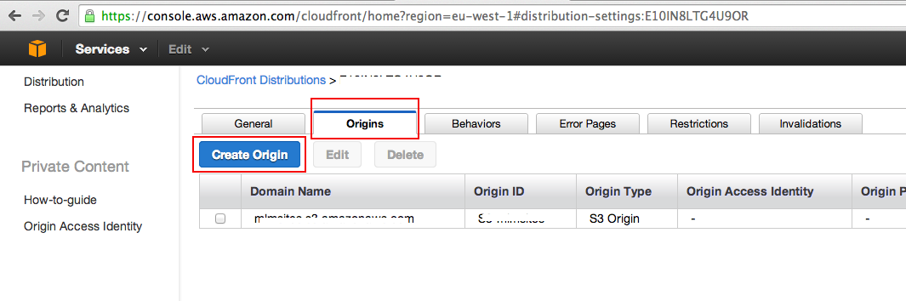
Добавим наш сервер в качестве исходного.
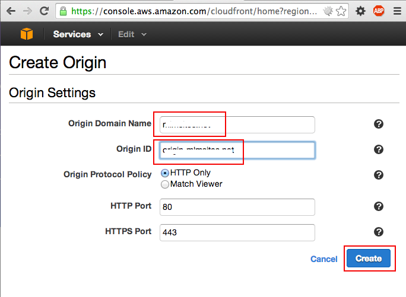
В поле Origin Domain Name указываем домен, по которому доступен наш сервер. Поле Origin ID подставится автоматически. Сохраняем нажав Create.
Во вкладке Behaviors указаны правила, по которым CloudFront будет искать файл, если его нет в кеше. Создадим новое правило для нашего сервера.
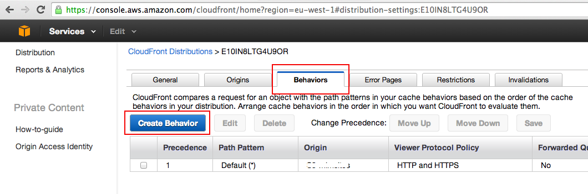
Поле Path Pattern определяет маску файла для правила. В нашем случае интересуют все файлы, поэтому указываем *.
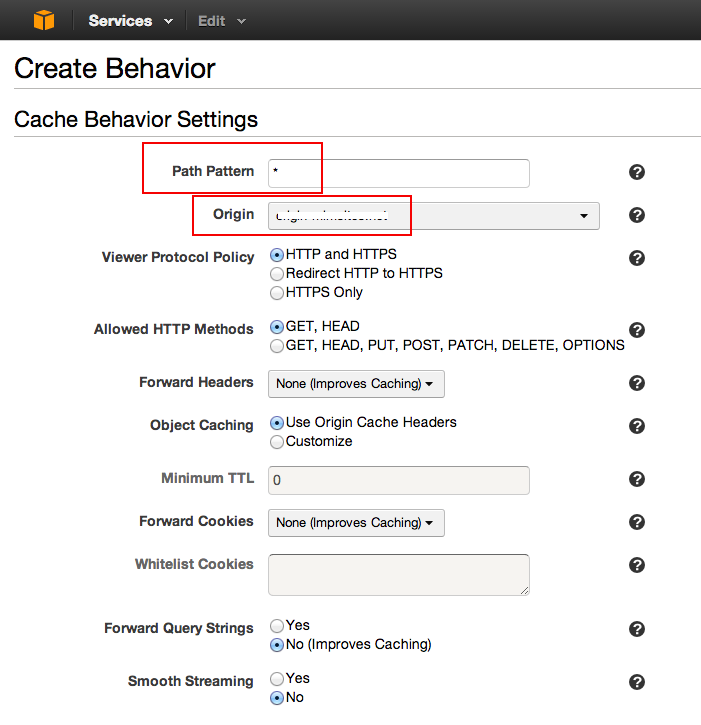
Это фича нужна, когда например у нас файлы .css лежат не на том же сервере, где картинки .jpg Тогда для одного сервера указываем правило *.css, для другого *.jpg. Подробнее про формат маски можно почитать здесь.
В выпадающем списке Origin выбираем добавленный на предыдущем шаге сервер.
Сохраняем конфигурацию и переходим к тестированию.
Тестирование конфигурации
S3+CloudFront
Для начала проверим, что правильно настроена связка S3+CloudFront.
Переходим в панель управления S3, в левом меню выбираем созданный нами бакет, в выпадающем меню Actions выбираем Upload.
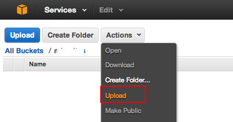
Добавляем файл Add Files.
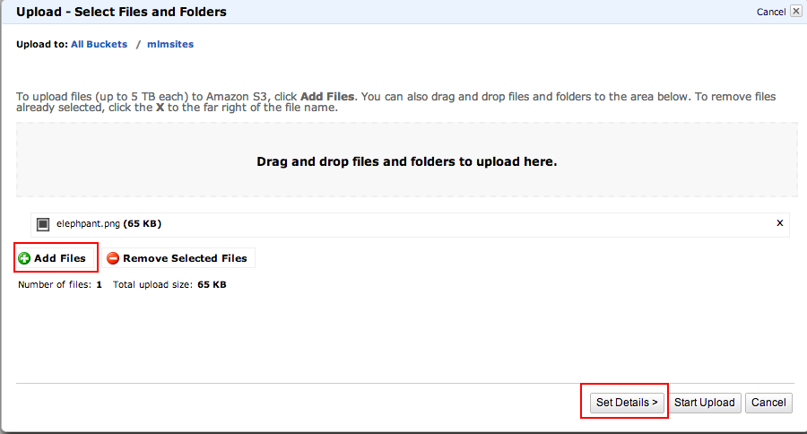
Переходим во вкладку Set Details и далее в Set Permissions и выставляем флаг Make everything public, загружаем Start Upload.
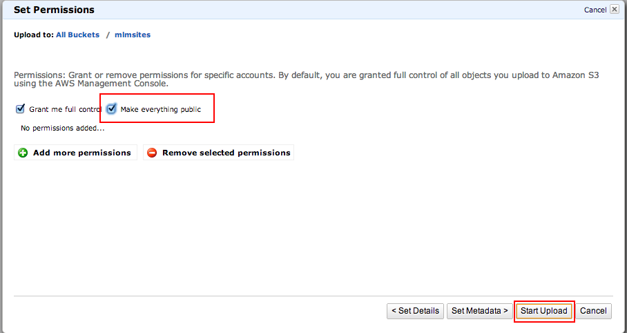
Проверяем, что файл доступен по прямой ссылке на S3 http://BUCKET_NAME.s3.amazonaws.com/elephpant.png, где BUCKET_NAME - название бакета.
Дальше проверяем, что файл доступен по ссылке на CloudFront xxxxxxxxxxx.cloudfront.net/elephpant.png.
Этот тест провалится, потому что у нас еще не настроен прокси. Об этом в следующем разделе.